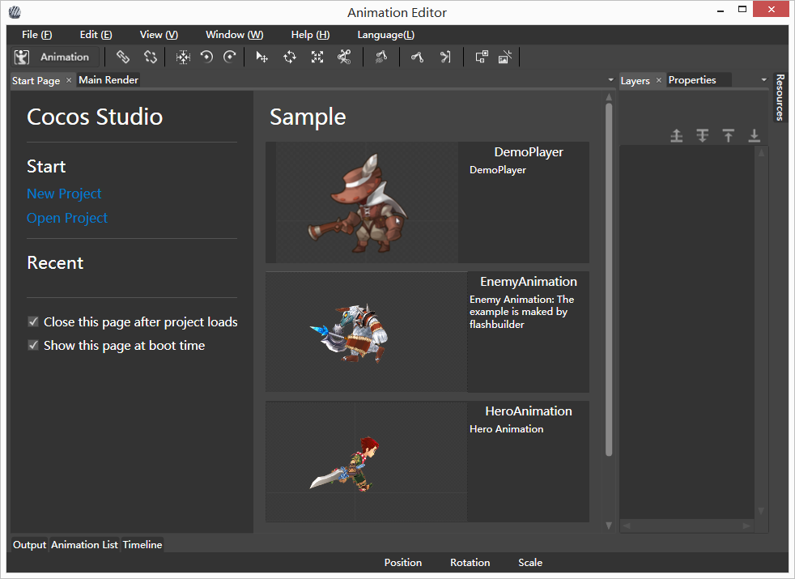

Action Editor Introduction
Overview

The Action Editor supports making and editing the mainstream skeletal animation and the frame animation sequence. It also supports importing Dragon Bones and Flash animations directly.
Workspace
Common Operation
Skeletal Properties
Export Project
Use Project
Copyright © 2013 CocoStudio.org. All Rights Reserved. Ver:1.4.0.0